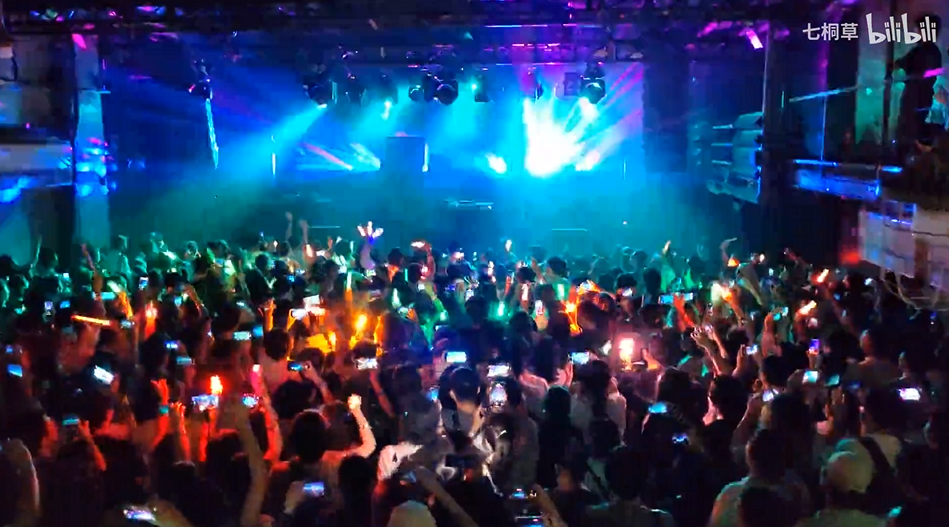
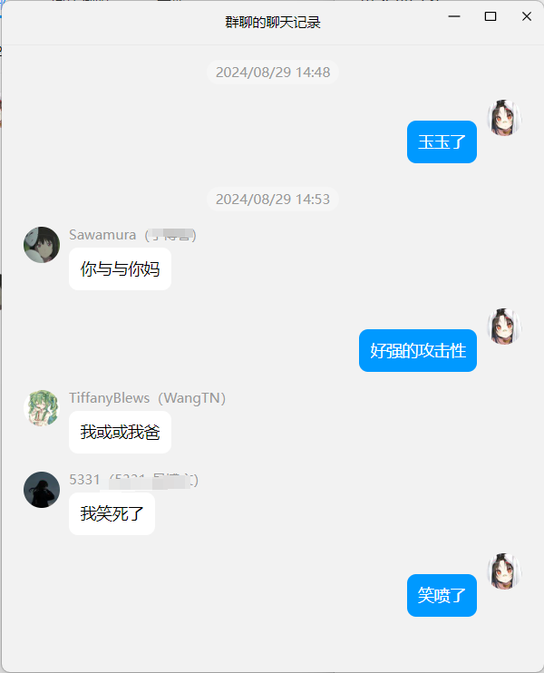
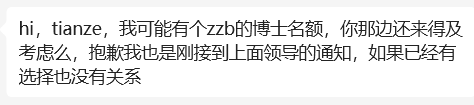
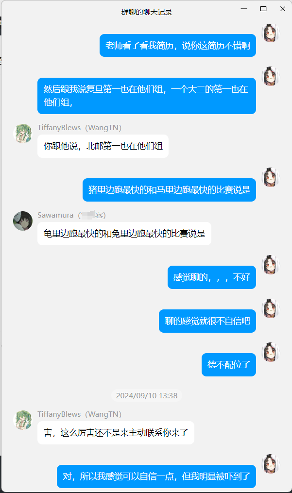
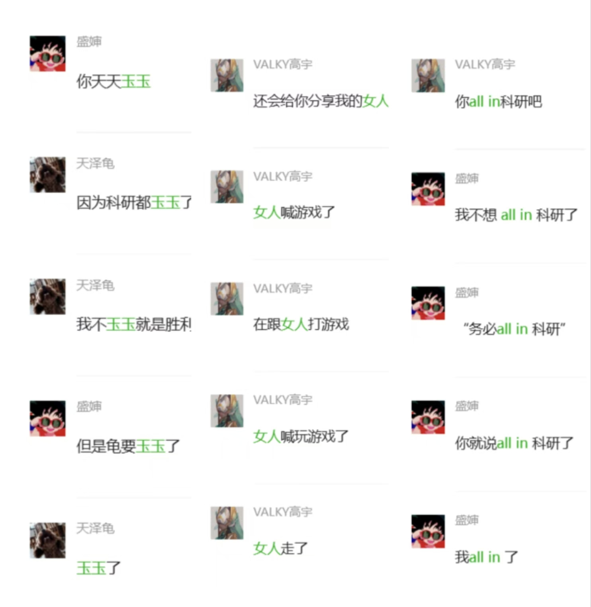

序
稳住，马上就有好结果了。
不要觉得独来独往很奇怪，也不要怕努力了却没有一个好结果，沉淀的日子总是安静无声，提前焦虑只会加重你的负累。还没到最后，你怎么就知道自己不行?
心理学上有一个你不敢想象的真相，就是该你做的事情，只要踏踏实实做下去，就一定会得到积极的反馈。不要一边做一边怀疑，事情才会往好的方向发展。
稳住，马上就有好结果了。—— 转自 小红书
第六章 压抑、思索、釜沉舟
一
龟在八月初的保研经历是缺失的，因为在这两周的时间里，龟已经在家里美美开摆了。他要么去找睿宁打 maimai（人菜瘾大）、要么在家躺着打游戏。这段时间，龟不仅玩儿了 P5R（打了一半左右，流程太长了），并且打通了宝可梦朱紫还打算入坑宝可梦对战，生活非常充实。
睿宁是龟的大学同学、高中同桌兼自小学就认识的信竞朋友。其人非常社牛，俨然一幅阳光开朗大哥哥的形象虽然本人并不这么认为。当龟在暑假还因为没有 offer 而焦虑着打游戏的时候，睿宁已经拿到了科大 offer 美美开摆，打算带着父母去西藏玩儿了。
当然，睿宁能去 top5 读书也是龟意料之中的事（？）论计算机技术，他是名副其实的 “极客”。和他相比，龟纯纯计算机小白。睿宁人也很体贴，一直在避免跟我谈保研的事情，防止加深龟的玉玉程度。但龟当时已经非常佛系了，人生在世都是缘，最后能去哪儿就去哪儿，大不了就考雅思出国，觉悟可谓是很高。
暑假的时候盛婶还在参加西湖大学的夏令营，并且凭一己之力霸凌了高中小团体。高宇暑假倒是来龟宅玩了好几次，爽爽打马车（真打不过）。期间浙大张老师还尝试联系过龟，问进组学习得怎么样了、布置的任务做了没。龟实在是没心思做这些任务，于是高宇跟龟讲：“你要觉得现在实习不方便、想好好准备保研的话，就跟导师和他好好说清楚就行了，老师肯定会理解你的。” 然后开始吹嘘自己在南科的导对自己有多好，一直关心他啥的。
龟觉得高宇前半句说的非常有道理，因此还算客气地跟张老师表达了 “不想实习，想准备保研面试” 的想法。结果张老师回复道，“上面的事情先尽快处理好了，我们节奏比较快，多积极主动参加科研”，那就是还得打工呗。
因此，通关宝可梦朱紫的那天晚上，龟决定重返学校，开始了新一轮的迷茫。
二
返校了，但龟还是不知道自己该干点什么。按理说，龟还是应该去刷点算法题以备浙软机试，然后在张老师的组里参与科研实习，做出一点成果放面试里讲。但龟还是在一直在逃避，尽管逃避意味着可能没学上。
尽管龟对于龟父和龟母提到的北邮AI老乡完全不感兴趣，但是龟母再三恳求“给她一点面子”，龟实在不好意思，就去和那位老师见了一面。龟来到了约定的办公室地点，电风扇嗡嗡发出声响、应和着窗外施工的声音，看到窝在墙皮脱落的办公室中打工的研究生们，龟就已经想回去了。
那个老师见面之后，和龟寒暄了几句，话题就来到了保研上。他一开始先吹嘘了一下自己做的一些成果，还把课题申报的一些材料给龟看，虽然我也不知道为啥要给我看这些；龟说自己对医学这块儿不感兴趣，他又连忙解释这是自己过去的研究方向，现在他什么都干一点，包括什么交通应用的大模型之类的，说实话，龟对这些也不感兴趣。
之后话题来到了龟的身上，他说自己有一个直博名额，但直博这件事需要慎重考虑。这位老师觉得身为博士，“需要在自己的研究方向上具有一定的影响力，让这个方向的其他研究者知道你这么一号人”，这点龟倒是挺赞同的。龟随即跟他表示了自己想做大模型幻觉这块，他立刻否认了龟的想法。他说 “做幻觉需要很多算力，我们实验室的经费撑不了这样的研究”。
随后，他又把龟之前做的科研项目排开，说是根据这些项目包装一下，给龟 “设计” 一个科研方向。龟打断了这位老师的呓想，直截了当跟这个老师说，自己还想再试一试其他学校，问老师这个 offer 能帮龟保留到什么时候。老师也可能也觉得自己被冒犯到了，表示你今晚就跟我说清楚，自己要不要来我们实验室，不来的话就去招其他人了。
讲到这里也没啥好讲的，龟悻然告辞，买票去看了一个叫原口沙辅的P主办的 live，狠狠地晃了两小时的脑袋。医学，爽！人狂热症，爽！术力口串烧，爽！
live 结束后，龟婉拒了这位老乡老师的直博 offer。

三
龟一边顶着学校给的压力、一边顶着浙大张老师的压力、一边顶着自己给自己的压力、一边参与专业小学期的实习、一边继续在浙大的组里打工，一边刷算法题练手。张老师可能看出来我在“摸鱼”，这段时间每天都在敦促我赶快搞好布置的科研任务。
张老师啥也没跟我说，龟只能去找学长帮忙。学长人都挺好的，第一位是一个即将毕业的学长，告诉我自己在秋招，没时间帮我解决问题，就给我丢了一个之前的文档，让我先了解一下这个项目是怎么个事儿，张老师问了就说在学了。我给他发了个 😂 表示感谢，他安慰龟说 “没事，大家都是这么过来的”。
第二位学长那就更热情了，好像在蚂蚁实习，看到我有问题二话不说，让我等他晚上回去的时候跟他联系。结果我晚上八点找他，他说还在公司。于是他借了一个隔间，开腾讯会议帮我排查问题，还夸我保研时候还能来实习“很厉害”，给我搞得不好意思了，很暖心。
这时候龟觉得，虽然张老师是很 push 我，但科研水平确实很高（感觉是目前我联系到的老师中排最高的），而且实验室学长学姐也很有能力带我，冥冥中我觉得跟他确实能有出路。但是张老师如果一直这样 push，那出路和天路哪个先走完我就不好说了。
相反，李老师感觉就是张老师的对立面。虽然北邮科研氛围不强，可能很难做出具有影响力的成果，但李老师真的是一位非常体贴、关心学生的老师，我觉得如果是李老师的话，我耐下性子读博都行。
这段时间我也联系了李老师询问直博名额的事，她告诉我直博名额还不确定有没有，让我也关注消息，等通知跟她说一声，这倒也符合北邮一贯作风。
与此同时，之前联系过的自所刘老师又来找我，问我预推免多了一个名额，还愿不愿意报他们组，那我可太愿意了，只是在担心他是不是还养了十几条鱼在钓我。
龟小时候对科研很感兴趣，想做一个科学家。但现在龟的梦想其实只是逃离本科这个意义不明的专业，去读 ai 方向的硕士。这样还算不算梦想？
不要温和地走进这个良夜，龟携玉玉、步入这良宵。
番外篇其一 玉玉、饭群、中二病
说道玉玉，上回说道龟喜欢在家庭三人群里倒情绪垃圾，最后招致了龟父龟母的老乡攻击。从那以后，龟便不敢在家庭群里倒垃圾了。
但还是得做到有的放矢啊，这就不得不提饭群了。饭群本来是三个喜欢中文VOCALOID的阿宅组建的小团体，经过两年时间的发展，人员规模已经扩大到四人，并且其目的也从一开始聊术力口变成了约饭群，故得名“饭群”。饭群也没有固定的群名，笔者写下本文时，群名为 《机头四》，真是强而有力，强而有力口牙！
饭群两人保研，但另一位保研的 WTN 桑早早找好了导师，开始美美享受大四时光了，龟在保研最玉玉的时光曾无数次后悔过为啥不直接本校找个老师，省去几个月的心灵摧残之苦。
其他两位睿和伍老师都是考研人，虽说都是考研，但二者的心境差距还挺大的。睿也是重量级，在饭群里是和龟一起倒情绪垃圾的战友。但其人本身有着魅魔一般的神力，无论怎么在群里说什么 b 话也不会招致不满，反而会激起某种保护欲（？
伍老师是你群群主，也是干饭运动的倡议人。这个比龟小三岁的小孩经常通过碾压级别的干饭实力压迫龟，让龟在 A 的时候多摊点钱。但其实想到伍老师平常也没有在群里玉玉，估计大都是通过干饭来缓解压力，龟也就睁一只眼闭一只眼，抓紧张嘴抢饭吃了。
找到了受害群体后，龟开始了长达一个月的玉玉时光。虽然被迫看我倒情绪垃圾确实是我打得有问题，但总不能不倒吧，不然就真玉玉了。其实兄弟们对龟很好，看我来到垃圾最多也就骂两句。最后请他们搓了一顿站点披萨，权当垃圾回收费，当然这都是后话了。

第七章 挣扎、痛楚、复怅惘
一
经过了一个暑假的沉淀，龟自认为已经沉得死死的了，即便是返校，也并没有怎么改善我痛苦的生活状态，整个人还是如同在泥泞的中心挣扎一般，寻不得方向。
龟曾问过自己，这种痛苦的由头究竟是什么：是张老师给我派的一些我摸不明白的活计吗，还是压抑折磨的保研过程，还是看不见摸不着的未来，亦或许是人生本生？
但如果是最后者的话，那便太可怕了：若痛楚之本离不了人生，凡世间的种种脱不了苦。基督教教导我们人间赎罪，死后便可去往天堂；佛教也讲究行善积德，才可在死后投胎到极乐之地。那对于活着的人，又该去哪儿才能寻得梦中的乌托邦呢？
不知怎的，高考失利的那段情绪又爬上了我，就仿佛他一直黏在我的脚底，从未离开过。当年龟在实验班摸爬滚打后考到这里，而如今又在希冀着不属于我的空中楼阁。这种德不配位的追索是否才是导致我痛苦的根源？我也不懂。这时候又怪念起我没好好读点书了。
张老师给我派了一个暑假的活终于是被我混完了。由于实在是不想继续参与这个项目，龟给老师编排了许多许多接口。感觉张老师也看出来我有点玉玉了，让我以后别发那么长串的话，之后有啥说啥。俺寻思那之前说不想做这活儿的时候，也没见你应啊。
现在最美好的结局到底是什么？我也不知道，但肯定不只是追求一个更高的平台，也不单单是找一个栖身之处那么简单。我总是焦虑于我的焦虑、挣扎于我在挣扎、苦楚于我的苦楚，但究竟应该去做什么才能规避这些无意义的呓语？
或许龟早就应该穿越回去，像其他人那样找个称心的本校老师把自己卖了，对于龟来说才是最好的选择。盲目的想飞得更高，只能摔得更惨。
但是从另一角度来讲，未来的未知性也就那样了。惨淡的高考成绩可以说是“未来”这个混蛋在龟短暂的人生中的第一次重击，但这三年我还是过来了，过得不能说多好，但也不差，总体来说还是挺开心的。
笑了，走路上打字儿打到一半，一个陌生小孩儿突然对我笑，仿佛是在鼓励我。
二
明知道是养鱼，龟还是去参加了自动化所的面试。看了看现场的名单，果然不出龟之所料，有至少二三十个人竞选三个名额，甚至也不乏清北选手。但其实龟现在也没感觉有啥压力了，正如之前所说，一切随缘。
我是第三个还是第四个进去面试的，之前负责联系我的学姐跟我说可以带U盘过去放自我介绍的PPT，结果进了会议室发现屁都没有，五个教授跟我大眼瞪小眼。好久没有做自我介绍，龟生疏了不少，磕磕绊绊好几次。
随后还是经典地拷打了我的专业和项目，这些我都防住了啊，没有闪。结果到了专业课程，龟还是有些露怯了。一个老师问我数据挖掘中有什么密度聚类算法，我说 DBScan；他又问有什么层次聚类算法，我一时间没想出来。后来我特意翻看了上课时的 PPT，层次聚类算法就是没说名字，不知道是何意啊。
反正去面试之后一直在等结果，还特地私信了联系我的学姐，都没有下文了，只能说默拒不是一种有礼貌的交流方式。明明知道我条件不行，为什么还要养蛊我。
感觉真的，一手好牌被我打烂了。早知道当时不逞强联系强导，随便联系一些弱导就好了。
但那又有什么意思呢？龟仿佛置身于一种奇妙而难以言说的情感。世人被笼罩在一层膜下，而我们又在自己和他人之间披上更厚的膜。我是该尝试打破这层膜，还是在这层膜内挣扎？
或许我应该尝试习惯，直至麻木。
三
北邮 AI 的李老师联系了龟，再次确认了龟的读博意向（看得出来，北邮学生确实很排斥读博），然后跟龟说这个直博名额应该是有了，不要着急，等之后面试通知就行。
龟小小地舒了口气，告诉自己不用担心，肯定是有学上了。但还是想去试试浙软的预推免，虽然最后浙软要是真录了龟，龟也不一定会去。不为别的，想证明自己罢了。
那样的话，应该怎么和张老师解释呢？我的室友、我的同学、我的朋友们又该怎么看我呢？龟明知没有必要去考虑这些问题，并且一遍遍对自己说只有自己能定义自己人生的价值，但还是无意识地会在名为社会的价值框架中去顾虑这些有的没的。
去饭群玉玉倒苦水，睿觉得考研有一半因素是因为他妈之前考研没考上，因此希望他能考研，这样人生就可以少走一些弯路。但他觉得自己一战考不上、二战不想考，感觉不如就业了。
龟从社会的价值框架下还是希望睿能加油考研上岸，一是考研之后的就业前景更好，二是考研上岸还能有机会喝酒（有些私心）。但龟同样尊重睿做的任何选择，因为其他人的建议还是作参考，终究只有自己能定义自己的价值。
晚上又去找睿宁（很巧，名字就差一个字（？）吃饭喝酒，虽说情绪垃圾是有地儿倒了，但是能给龟人生建议的还是只有睿宁。龟和睿宁分享了自己的情况，并表明自己想留北邮读博之后，睿宁让我冷静下来，可以的话还是去浙软，并理性地给我分析了如下原因：
- 读博并非像龟想象的那样是读研 plus 版，而是某种读研 pro plus ultra 版。读博的毕业要求比读博难了不只半点，没有点心态和毅力可能真的读不下来，况且龟读的是直博，万一真读不下来连硕士学位都没有，那不就完大蛋了。
- 北邮的科研环境确实全方位不如浙大，如果想容易做出成绩的话，留浙大还是更好的选择。加上龟选择的导师虽然 push，但还算是半个强导，是可以给出指导的，这样的话更容易出成果，算上浙大的 title 之后毕业也好找工作。
- 龟之前实习的方向是 NLP 这块儿，而北邮导的研究方向是语音。虽然龟对语音技术还算有着强烈的科研兴趣，但对这个领域的了解还是太少了，贸然读博的话还有风险。
- 虽然浙软老师很 push，但是专硕只有三年。这三年你就当去坐牢了，咬咬牙挺过来，然后爽爽就业赚钱，岂不美哉？
只能说不愧是睿宁，完美地解答了我所有的疑惑。睿宁又分享了一波他的旅行经历，表示自己正在投简历，打算狠狠地实习赚米。龟也想出去实习，但又觉得如果跟了浙软老师的话，估计大四就只能 all in 科研了。
与睿宁相伴回校的路上，他援引了一句我已经不记得名字的夜鹿的歌词儿：“人生就是连续的妥协。” 此话着实不假。
四
正当故事将以一个毫无悬念的结局结束，迎来终末之结局的时候，很久之前联系过的交大刘老师突然给我发来微信，命运的齿轮重新转动了起来。

交大的老师问我有没有选择？那我包没有的啊！我连忙跟老师表明了意向，并询问是否需要面试？刘老师让我不用着急，他可以明天中午跟我简单聊聊具体情况。
尽管老师让我不用紧张，但这确实是会影响我人生轨迹的可能性，直觉告诉我应该抓住。第二天中午，我还是做足了充分的面试准备，进入腾讯会议室。刘老师比起个人主页的照片上要显得微胖一点，显得有些可爱）看到我头像是那位长者，他略带打趣儿说道：“你头像还是我们学校的学长啊。”
事实也正如刘老师所说的那样，和我真的只是单纯聊聊。他告诉我这个名额真的是刚刚才多出来的，你对我们课题组感兴趣的话欢迎你报考；但还是有很多学生报考ZZB的专硕，因此也有很大风险，最好是留有一个 Plan A 在手上，然后把这个做成你的 Plan B。
他跟我接着聊了聊他们组的情况，简单来说就是刘老师尝试说服龟他们组很强，还说复旦 Rank 1 也在他们组。这反而起了反效果，龟被吓得说都不会话了。满脑子想的都是，啊？？复旦 Rank1 ？？那我何德何能啊？？德不配位了……
但刘老师的很多科研方向都非常 impressive，是一位非常有科研追求与学术品味的老师。龟询问了实验室具体的几个研究方向，也简单聊了聊自己的科研兴趣。但大部分时间还是刘老师在对龟进行单向输出，龟只能应声附和。
聊完之后，一种强烈的不配位感便油然而生了。龟深知自己的水平比不上那些交大本和复旦本的佬，甚至也比不上北邮计院的那些佬们。在饭群玉玉了一通，理智稳定了不少：

想了想，确实没必要担心这个。龟又回想起曾经刚进大学的目标只是转到AI方向去打拼，那龟现在的目标就是看看我究竟跳多高。只要跳的更高、看到了上面的风景，就不想回去了。而要想跳得高，首先应该下蹲。
之后又是各种的准备机考、准备概率论、以及英文的自我介绍了。龟自认为不是一个很能处理的终点冲刺的人，但这时候也不能顺从自己了，必须要强迫着做一些事情，“Now It’s the time” 。
还有一点就是要自信吧，不管发生什么事情，首先要保持自信，就算真的焦虑，也不要把胆怯的一面暴露出来。其实龟上个学期还挺自信，做汇报什么的都很流利，也没怯场什么的。但是确实最近经历了一些失败，心有些累了。但就像龟母说的，这些过去的失败也是意义的，它们帮助你规避了之后可能遇到的问题嘛。
保持一个良好的心态去面对新的挑战，摆出一副天不怕地不怕的模样，我觉得是最好的。正所谓：“我可以失败很多次，但我只需成功一次。”
看完《-地- 关于地球的运动。》，最大的感触就是信念是最重要的宝物。
龟现在的信念又是什么呢？
番外篇其二 调侃、强度、松弛感
在第一章和第六章里，龟曾经提到了两个人：盛婶和高宇。我觉得有必要展开讲讲。
这两位不能说是待我不薄吧，也只能说是猪狗不如了。龟在高中的时候就因为脾气太温和、不够抽象，没少受这两人欺负。只能说性格太好，换成其他人早跟他俩爆了，龟权当被儿子骂骂得了。
后来大家玩笑开惯了，也逐渐探到了所有人能接受的地狱笑话边界，于是互相开始疯狂擦边开对方的地狱玩笑，看谁先红温。之前三人鲜有交流，但在九月初，一个契机让三个臭皮匠重新聚起来。
盛婶最后保研去了西湖大学，打算换一台新的笔记本，有 GPU 的那种跑跑实验。当时当时北京地区有购机补助，可以省 20% 的钱。于是负责买机的盛婶、负责实操的龟、以及推荐红米的铁血米粉高宇又凑了一个购机微信群。
购机之后，三人就开始东拉西扯，时不时还开俩把斗地主或者雀魂，故称为牌群。牌群的目的更纯粹一点，就是互相倒史。龟忙着倒玉玉史和“何意啊”史，高宇在倒妹妹史和“打不打牌”史。听说浙大张老师的事迹后，身为浙大人的盛婶天天在群里倒抽象史以及“务必 All In 科研”史。群里整日都洋溢着浓厚的答辩气息。
站在上帝视角来看，三人最后幸终，并且截止到笔者完稿前还开了几把牌。龟还是很喜欢这两个家伙的，骂他们和被他们骂有一种相生相克的松弛感，要是能让龟多赢点牌就好了。

To Be Continued…